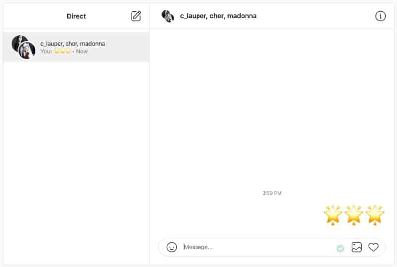

Mental Health Kit
Let's improve our mental health together

About
Connecting with people with different types of mental health. Where you can get more information about mental health, activities to help you with your mental health. Connect with others who has different or same mental health disorders.
Inspiration for the project
I have been struggling with mental health for about 3 years and has some family members and family who struggles with mental health. That's why I decided to create this app. As a student of ALX , I had the opportunity to work on this project as part of my portfolio. However, this idea for this project came from my own personal experience and the need to better my mental health.
Features

This feature is so that they can create their profile and set it up by adding a profile picture, share what information they want to put on their profile.

Where users can share anything they like to without receiving any negative responses and can be seen and heard.

Can message a peer one on one if they are not comfortable with responding public. Can also send videos and audio messages.
github repository https://github.com/teslynnchristians/Mental-Health-Kit.git
github account : teslynnchristians